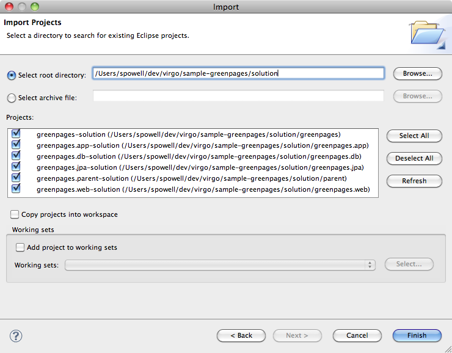

Using Eclipse and the Virgo Tomcat Server tools, it is possible to run applications directly from the IDE. As changes are made to the application in the IDE, they can be automatically applied to the running application allowing for rapid feedback of changes in function.
Before starting the GreenPages application from Eclipse, import the projects:
Open the Import Wizard using → .
From the Import Wizard select → and click Next:

Click and select
$GREENPAGES_HOME/solutionas the root directory.In the Import Projects window, select all the projects and click Finish:
Validate that the imported projects appear in Package Explorer:

There may be compilation errors at this stage.
Projects for Virgo Tomcat Server are associated with a Virgo Virgo Tomcat Server runtime environment in Eclipse. This is to allow launching and testing from within Eclipse, and also to allow classpath construction in Eclipse to mirror the dynamic classpath in the Virgo Tomcat Server runtime.
Compilation errors in the previous step will be resolved here.
To configure a Virgo Tomcat Server runtime environment:
Open → → .
In the Show View dialog choose → to make the servers view visible:

Right-click in the Servers (which may not be empty) view and select → .
In the New Server dialog, choose → and click Next.
Click and select the
$SERVER_HOMEdirectory. Ensure that a JRE is selected supporting Java 1.6 or above. Click to complete creation of the server:
Select all projects (except Servers) in Package Explorer. Right-click on the projects and choose and then .
It is possible that there remain spurious build errors from Eclipse (see the Problems view), in which case a project clean build may clear the problems. Select → from the main menu, and choose to Clean all projects. It may be necessary to repeat this on a few projects. (This process is sometimes known as the “Eclipse dance”.)
Despite the dance steps outlined, there will remain some Warnings like this:
It is safe to ignore these.
When the Virgo Tooling starts the Virgo Tomcat Server it uses a ‘warm start’ by default.
It is useful to set the -clean option so that every server start is a clean one.
This is done by an option on the Virgo Tomcat Server Overview window, which is obtained by opening the Virgo Tomcat Server entry in the Servers window.
(Double-click, or right-click and choose Open.)
The check box is labelled ‘Start server with -clean option’.
Close the window before proceeding.
Now that GreenPages is successfully imported into Eclipse, run the project directly from within the IDE.
If the GreenPages PAR file was previously copied to the pickup directory, be sure it is now removed so that
it does not conflict with the deployment of the Eclipse project. On Unix:
prompt$ cd $SERVER_HOME/pickup prompt$ rm greenpages-solution-2.4.0.RELEASE.par
On Windows:
prompt> cd %SERVER_HOME%\pickup prompt> del greenpages-solution-2.4.0.RELEASE.par
Also, to prevent conflicts with the server configured in Eclipse, stop a currently-running Virgo Tomcat Server by typing Control-C in the console window.
To run GreenPages from within Eclipse:
Right click on the Virgo Tomcat Server instance in the Servers view and select the menu item.

Add greenpages-solution (which is the containing project or PAR) to the server and finish.
To start Virgo Tomcat Server from within Eclipse right-click on the Virgo Tomcat Server node in the Servers window and choose . The Servers view should now show the server and the added project:

Verify that GreenPages is started correctly by checking for:
<DE0005I> Started par 'greenpages' version '2.4.0.RELEASE'.
in the Console window.
(If errors are shown implying that GreenPages failed to be installed, this may be because some dependencies were not copied to Virgo Tomcat Server, as described in the section called “Installing Dependencies into Virgo Tomcat Server”. Check this.)
Once installed and started GreenPages is again available from a web browser at the address http://localhost:8080/greenpages.